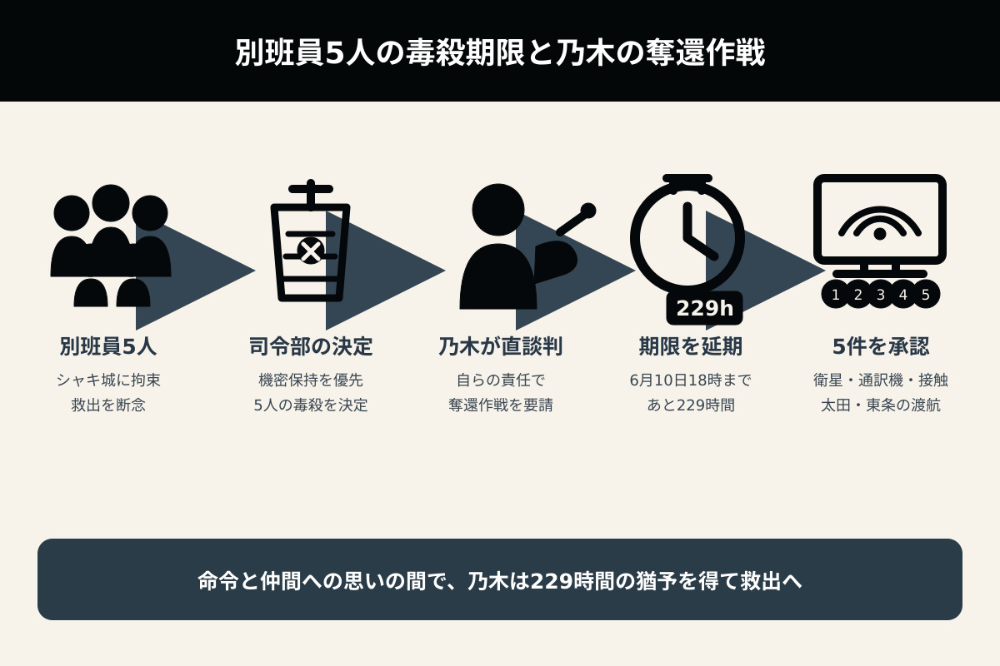
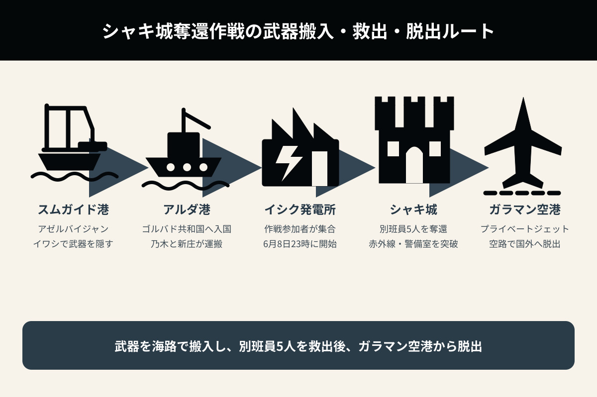
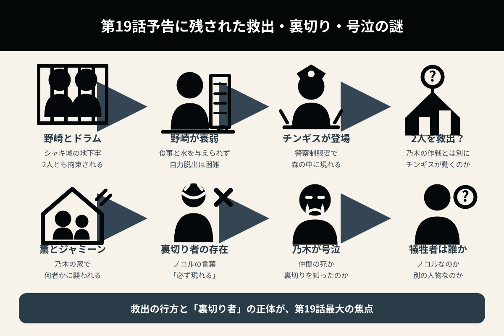

別班員5人の奪還作戦が始動
野崎とドラムを救うのは誰か？
前半戦最終回となる第18話。乃木憂助は、毒殺が決定した別班員5人を救うため、櫻井司令に直談判します。テントや現地別班員、民間軍事会社Y2K、ブルーウォーカー・太田梨歩、東条らが集結し、シャキ城奪還作戦が始動。一方、野崎とドラムにも命の危機が迫ります。

1. 前作・第17話で描かれた乃木憂助の葛藤
別班員として命令に従うべきだという使命感と、仲間を救いたいという思いの間で揺れ動く乃木憂助の葛藤が、色濃く描かれた。
乃木は、
と繰り返し唱え、自らを納得させようとする。
しかし、別班員として規律を守ろうとする一方で、捕らわれた仲間を見捨てることはできなかった。
丸菱商事の長野専務から後押しを受けた乃木は、別班員拉致事件を解決するため、「テント」最高幹部のノコルに協力を仰いだ。
2. 櫻井司令との直談判――救出作戦に与えられた猶予
「テント」関係の任務に携わった別班員5名が、中国系組織Xinxi（シンシー）に拉致される事件が発生した。
拉致された別班員は、アゼルバイジャンに隣接する「ゴルバド共和国」（架空）の「シャキ城」に囚われている。しかし、別班司令部は救出を断念し、機密保持を目的とした毒殺を決定した。
乃木は、櫻井司令に救出・奪還作戦の実行を直談判した。
乃木はそう申し出て、櫻井司令から作戦実行の了解を取り付ける。
ここまでが前作・第17話で描かれたストーリーだったが、その直談判には続きがあった。
乃木の申し出を受け、櫻井司令は毒殺の決行日時を6月10日18時に延期した。
乃木たちに残された時間は、あと229時間。日数にすると9日と13時間の猶予が与えられたことになる。
乃木が救出へ向かうことは許されたが、期限までに間に合わなければ、拉致された5名は機密保持のために毒殺されることが決定している。
櫻井司令は、これ以上の延期は認めず、6月10日18時には予定どおり毒殺を決行すると乃木に告げた。
さらに乃木憂助は、司令部から必要な支援を問われ、次の5件を要請した。
1．衛星の単独使用許可――櫻井司令から「第2衛星を使いなさい」と使用を許可された。
2．別班が保有する同時自動通訳機の使用許可
3．現地別班員との接触許可
4．ブルーウォーカー・太田梨歩の海外渡航に関する特別許可
5．東条の海外渡航許可――櫻井司令は「佐野公安部長に頼みましょう」と応じた。
こうして、乃木が要請した5件すべてが承諾された。

3. アゼルバイジャンで現地別班員・田代久美子と接触
乃木は、アゼルバイジャンの首都バクーで、現地別班員との接触を図った。
キョログル駅で下車した乃木は書店へ向かい、「アヴェスタ現訳・第10版」を注文する。すると店主から、3階の303号室へ行くよう告げられ、接触コードが「22135」であることを教えられた。
乃木は303号室へ向かい、部屋にいた現地別班員・田代久美子との接触に成功した。
田代は、コーカサス地区を担当する別班員であり、今回の作戦では後方支援を担当することが判明した。
また、田代のエージェントであるフィルザ（女性）、ロマル（男性）、ナティックも新たに登場した。
・2007年 シンガポール国立大学を卒業
・2007年 陸上自衛隊に入隊
・2009年 心理戦防護課程に合格
・2009年 自衛隊を除隊し、別班へ配置
・2013年 SOCAR（アゼルバイジャン国営石油会社）に入社
・以後、コーカサス地方担当の別班員として任務を遂行
ちなみに乃木は、自身を「東アジア・中央アジア担当」と名乗った。
第13話では、タイで乃木の前に東南アジア担当の別班員として現れた長野専務が、乃木も別班員であったことに驚きながら、テントについて、
と語っていた。
別班員同士であっても、担当地区が異なれば任務に関する情報は共有されないという、別班の徹底した秘密主義がうかがえる。
4. バルカで「テント」と合流――奪還作戦の協力者が集結
乃木の義兄弟であるノコルをはじめ、チョッキー、新庄、民間軍事会社「Y2K」の精鋭、そして乃木への協力者たちがバルカに集結した。
乃木は、黒須駿ら別班員5名の奪還作戦に、それぞれが参加することを確認する。
そして、新庄はやはり生きていた。
別班のエージェントであるゲルンが新庄を援護し、顔の型を取って、新庄とは別の人物の遺体を本人の遺体に見せかけていた。
現地警察のドン局長も別班と通じている仲間であり、新庄は弾丸を通さないワイシャツに着替え、銃撃された際には死んだふりをしていた。
ただし、足を5発撃たれており、その後はベトナムで療養していた。
新庄は乃木憂助から、
と言われていた。
続いてノコルから、民間軍事会社「Y2K」に所属する11名の精鋭たちが紹介された。
「Y2K」の11名の精鋭たちは、乃木が偉大なるノゴーン・ベキの息子であることから、その乃木のためなら命を懸ける覚悟を持っていた。
ノコルは、
と説明した。
さらにノコル自身も、
と語り、危険を心配する乃木の反対を押し切って、現地での奪還作戦に参加する。
5. 乃木が説明した別班員5名の奪還作戦
ゴルバド共和国・オルコ村にあるシャキ城には、黒須駿ら別班員5名が囚われている。
一方、野崎に関する話はこの作戦説明の中では出ていない。そのため、現時点では野崎は、乃木たちが計画している奪還作戦の対象には含まれていない。
乃木は、別班員5名の奪還作戦について、次の5項目に分けて説明した。
1．タイムリミット
2．入国
3．出国
4．携行火器、弾薬、その他装備品の持ち込み
5．シャキ城の攻略
1．タイムリミット
6月10日18時に毒殺が決行されるため、乃木たちは6月8日23時に作戦を開始する。
まずは、現地別班員が借り入れたイシク発電所に、作戦参加者全員が現地集合する。
2．入国
入国方法については、「4．携行火器、弾薬、その他装備品の持ち込み」と併せて説明される。
3．出国
脱出には空路を使用する。
使用するのは、シャキ城から最も近い、88キロメートル先にあるガラマン空港。
現在、ガラマン空港は貨物機だけが使用する空港となっている。
チョッキーのプライベートジェットで入国し、その機体を使って国外へ脱出する。
チョッキーがフローライトの調査に来たと虚偽の申請をすれば、ゴルバド共和国側から入国を快諾されると踏んでいた。
ただし、ゴルバド共和国側にHQ-9地対空ミサイルが配備されていれば、航空機による脱出を阻止される危険がある。
4．携行火器、弾薬、その他装備品の持ち込み
武器は、アゼルバイジャンのスムガイド港から、ゴルバド共和国のアルダ港へ運搬する。
イワシ漁を装い、積み込んだイワシの中に武器を隠して、乃木憂助と新庄がゴルバド共和国へ運び込む計画である。
5．シャキ城の攻略
シャキ城への侵入・攻略については、城の警備態勢や赤外線センサーの配置などを確認したうえで、実物大のモックアップを使った訓練を重ねることになる。

6. ブルーウォーカー・太田梨歩と東条がアゼルバイジャンに到着
作戦をサポートするため、ブルーウォーカーこと太田梨歩と、警視庁サイバー犯罪対策課に所属する東条がアゼルバイジャンに到着した。
2人は現地エージェント・フィルザ（女性）の協力を得て、ゴルバド共和国との国境からわずか300メートルの地点にある、アゼルバイジャン側の拠点へ入った。
アジトとして用意されていたのは、古城のような建物だった。
準備を終えると、フィルザはゴルバド共和国へ向かい、ルモー地区に侵入。太田たちから渡されたものを現地に仕込んで戻ってきた。
ルモー地区のシステムへのハッキングは、ブルーウォーカー・太田梨歩が担当する。
太田は東条に対し、ゴルバド警察と軍のシステムへのハッキングを担当するよう指示した。
東条は、太田の指示に対してやけに従順な態度を見せていた。
太田は現在、別班とエージェント契約を結んでいる。東条がここでも乃木の存在を恐れ、太田に対して従順になっているのだろうか。
余談だが、アジトとして用意された建物のロケ地は、「大理石村ロックハート城」である。
ここは群馬県吾妻郡高山村にある石のテーマパークで、ドラマ『相棒』や『金田一少年の事件簿』、映画『翔んで埼玉』などのロケ地としても使用された場所である。
7. 実物大のモックアップを使った奪還訓練が開始
現地エージェントのロマル（男性）がオルコ村を偵察した結果、村人全員がシャキ城の偵察員であることが判明した。
乃木たちは作戦決行に備え、必要な下準備を進めるとともに、モックアップ（実物大の模型）を組み立てて、繰り返し訓練を行った。
二宮和也演じるノコルが率いる「テント」のメンバーたちも、作戦決行に備えた下準備を進め、モックアップ（実物大の模型）を使って訓練を行う様子が描かれた。
シャキ城へ侵入するためには、設置されている赤外線センサーを突破しなければならない。
さらに、警備システムを停止させるためには、警備室へ侵入し、解除ボタンを押す必要がある。
城への侵入だけでなく、赤外線センサーの解除と警備室の制圧を、限られた時間の中で同時に進める必要があることが分かる。
8. 野崎守とドラムの安否――脱出には第三者の協力が必要か
劉銘軒（リュウ・ミンシュエン）は、野崎の潜入作戦を見抜いただけでなく、野崎を探していたドラムまで拘束した。
2人は、シャキ城の地下と思われる牢屋のような場所に投獄された。
ドラムには食事が与えられている一方、野崎には食事も水も届いていない。
食事を運ぶ「フードロスニキ」こと沈俊宇（シン・ジュンユー）が、連日、野崎の目の前でわざと食事や水を床に落としてしまうため、野崎は瀕死の状態に陥っている。
野崎守は飲まず食わずの状態が続き、著しく衰弱している。そのため、自力での脱獄は難しく、脱出には第三者の協力が不可欠だろう。
野崎守を救出するのは、いったい誰なのか。
「究極の愛」を自称する劉銘軒（リュウ・ミンシュエン）なのか。それとも、第19話の予告で一瞬、森の中にいる姿が映ったバルカ警察のチンギスなのか。
乃木たちの奪還作戦に野崎とドラムが含まれていないだけに、2人を救う別の人物が現れる可能性が高まっている。
9. 第19話予告から考察する奪還作戦と裏切り者
第18話の放送後に流れた第19話予告では、ついに激しい奪還作戦が開始される。
激しい戦闘が繰り広げられる中、作戦に参加していないはずのチンギスが、バルカ警察の制服姿で森の中にいる場面が一瞬映った。
「野崎とドラムを助けるのはチンギス」なのだろうか。
チンギスがゴルバド共和国まで来ているのであれば、どのような経緯で野崎たちの危機を知り、現地へ向かったのかも注目点となる。
また、第19話の予告では、乃木の家で暮らす薫とジャミーンが何者かに襲われる描写もあった。
薫とジャミーンを襲った人物や、その目的も明らかになっていない。
そして、ノコルが口にした、
という言葉は、いったい誰を指しているのか。
奪還作戦に参加する人物の中に裏切り者がいるのか。それとも、日本に残る人物の中に裏切り者がいるのか。第19話に向けて、大きな謎が残された。

10. 残された伏線が、さらなる謎を呼ぶ
エリシャ・ママドフ博士
エリシャ・ママドフ博士は自殺したとされていたが、第17話で、それが偽装だったことが判明した。
現在は情報ブローカーに囲われ、シンシーに技術を売却するための交渉が進められている。
しかし、第18話終了時点でも、その所在や交渉の行方、シンシーが博士の技術を何に利用しようとしているのかは判明していない。
毛じいさん
野崎に電光掲示板を通じてシャキ城の情報を伝えていた人物は、「毛じいさん」と呼ばれる、北京時代からの協力者であることが分かった。
しかし、その後の謎解きはまだ描かれていない。
毛じいさんがどのような人物で、なぜシャキ城の内部情報を把握しているのか。また、今後も野崎の救出に関わるのかは不明である。
劉銘軒（リュウ・ミンシュエン）が乃木憂助に似すぎている件
劉銘軒は、自身について「5歳から日本で育った」と話している。
一方の乃木憂助は、乃木卓が公安警察官としての身分を隠し、妻の明美とともにバルカへ渡った後、現地で誕生している。
双子であることを示す伏線はないため、2人の容姿が似ていることには、何らかの血縁関係が関係しているのではないかと推測される。
第11話では、シンシーへの潜入前に、野崎守が乃木卓の兄である乃木寛道と、ホテルニューオータニの1544号室で面会する謎の場面が描かれた。
あの場面が、乃木と劉銘軒の関係につながる伏線なのだろうか。
また同じく、野崎がわざと「1544」と口にしたことも伏線ではないかと思っていたが、その意味は現在も明らかになっていない。
乃木が号泣する姿
第19話の予告では、乃木が激しく号泣する姿が映し出された。
ノコルが語った「裏切り者は必ず現れる」という言葉は、誰を指しているのか。
また、乃木が号泣するほどの出来事とは何なのか。
死亡する人物がいるとすれば、それはノコルなのだろうか。
乃木の涙が、仲間の死によるものなのか、裏切りによるものなのか、それとも別の衝撃的な事実を知ったためなのかは、まだ分からない。
新庄の死亡偽装のからくり
第18話では、新庄が「銃殺」されてから、別人の遺体を新庄の遺体に見せかけるまでのからくりが、回想シーンを交えて放送された。
しかし、明らかにならなかったのは、日本で行われた遺体確認の場面である。
第14話のラストでは、棺が移送された羽田空港で4人が新庄の遺体と対面し、顔を見た人物から、
と声が漏れた。
佐野公安部長は、
と話し、新庄の遺体を火葬したうえで、遺骨を両親へ引き渡すよう指示した。
さらに「検視は？」と問われると、
と、その疑問を退けた。
この一連の対応を見ると、佐野公安部長も新庄の死亡偽装に協力していた可能性が高い。
しかし、「佐野公安部長もグルだった」という点についての明確な謎解きは、まだ描かれていない。
第18話で新たに分かったこと
| 別班員5人 | 6月10日18時に毒殺されることが決定している |
|---|---|
| 乃木 | 櫻井司令の許可を得て、229時間以内の奪還に動き出した |
| 田代久美子 | コーカサス地区を担当する現地別班員で、後方支援を担当する |
| 新庄 | 死亡は偽装であり、現在はノコルの右腕としてバルカにいる |
| Y2K | 11名の精鋭が奪還作戦に参加する |
| 太田・東条 | ゴルバド警察・軍・ルモー地区へのハッキングを担当する |
| 野崎・ドラム | シャキ城地下に拘束され、野崎は著しく衰弱している |
| チンギス | 第19話予告でゴルバド共和国と思われる森に姿を見せた |
| 薫・ジャミーン | 第19話予告で何者かに襲われる描写がある |
| 新たな謎 | 裏切り者の正体と、乃木が号泣する理由は明らかになっていない |
第18話の見どころ
第18話は、前半戦の最終回として、これまで散らばっていた人物と組織が「別班員5人の奪還」という一つの目的に向かって集結する回だった。
乃木は、別班員として命令と規律を守る立場にありながら、仲間を見捨てることができない。櫻井司令との直談判で得た猶予は229時間。失敗すれば、救出対象の5人は機密保持のために毒殺される。
作戦には、現地別班員・田代久美子、ノコル、新庄、民間軍事会社Y2Kの精鋭11名、太田梨歩、東条、現地エージェントたちが参加する。第1シリーズから関わってきた人物たちが、立場を越えて集まる展開は、前半戦最終回にふさわしい大きな見どころとなった。
一方で、乃木たちの救出対象には野崎とドラムが含まれていない。2人を救出する人物として、第19話予告に映ったチンギスが浮上している。
さらに、薫とジャミーンを襲う人物、ノコルが警告した「裏切り者」、乃木が号泣する理由など、第19話に向けた重大な謎も残された。
別班員5人の奪還は成功するのか。野崎とドラムは誰に救われるのか。そして、乃木の仲間の中に本当に裏切り者がいるのか。第18話は、激しい奪還作戦が始まる直前までを描いた、緊張感の高い回となった。